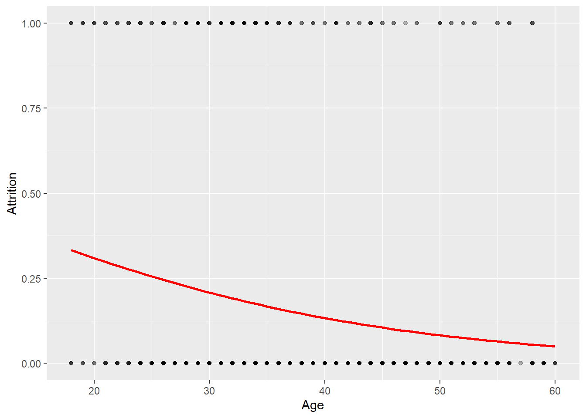
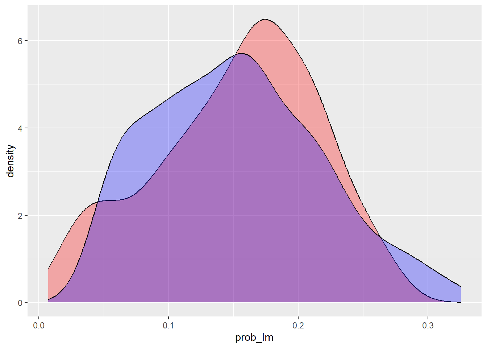
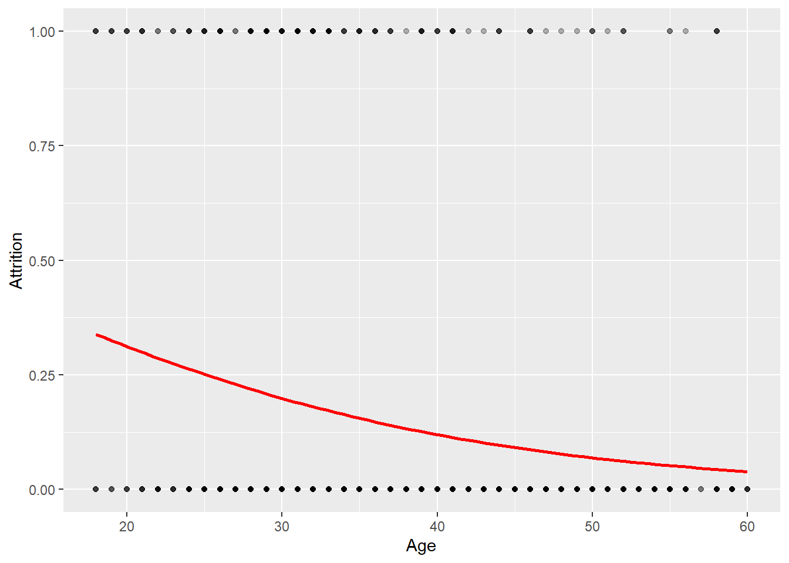
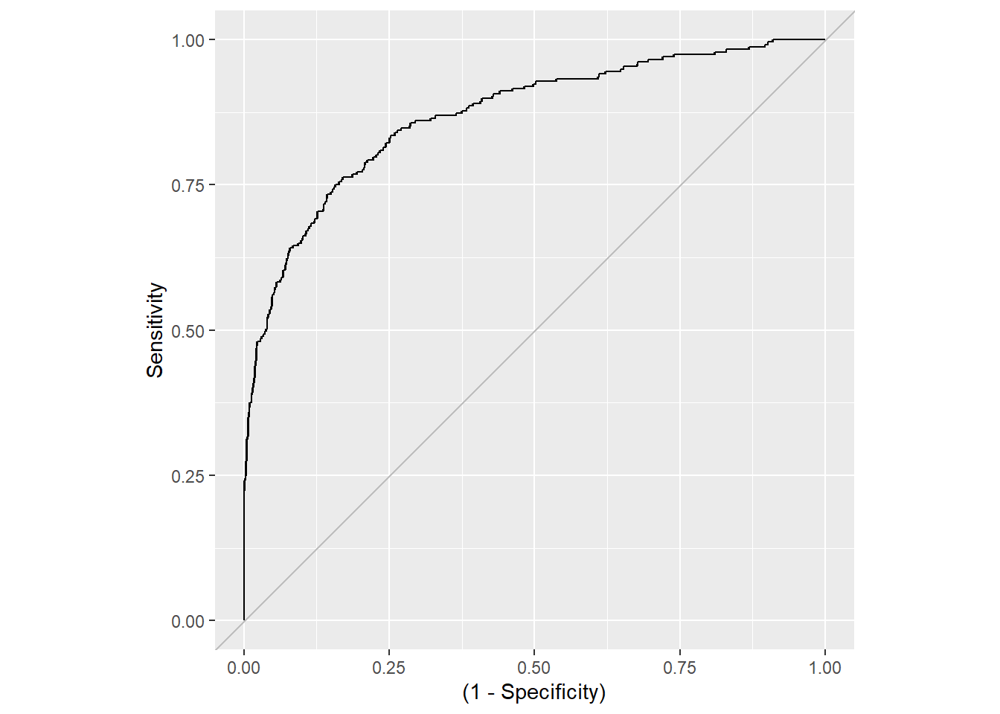

library(tidyverse) # datahåndtering, grafikk og glimpse()
library(skimr) # funksjonen skim() for å se på data
library(rsample) # for å dele data i training og testing
library(AUC) # For å beregne ROC-curve og AUC3 Logistisk regresjon
I dette kapittelt skal vi bruke følgende pakker:
3.1 Estimere en sannsynlighet
Når utfallsvariabelen er binær (to verdier) kan man likevel bruke lineær regresjon. Det kalles da gjerne en lineær sannsynlighetsmodell. Men det har noen ulemper, derav viktigste er modellen da kan predikere sannsynligheter lavere enn 0 og høyere enn 1. Når man er mest interessert i \(\beta\) er det ikke sikkert det er så nøye. Men når vi er interessert i \(\hat{y}\) kan det derimot være viktig. Logistisk regresjon kan dessuten håndtere utfall med flere enn to kategorier, noe OLS ikke kan.
Vi bruker derfor logistisk regresjon når det er kategoriske utfall. I andre sammenhenger vil folk hevde at OLS er bedre å bruke (av diverse grunner), men i denne sammenhengen er logistisk regresjon som hovedregel å foretrekke over OLS for kategoriske utfall.
3.2 Logistisk regresjon i R
Logistisk regresjon har det til felles med lineær regresjon at utfallet er en lineær spesifikasjon.
\[ log( \frac{\pi}{(1-\pi)}) = \alpha + \beta X \]
Venstresiden av ligningen kalles en logit, der \(\pi\) er en sannsynlighet. Uttrykket \(\frac{\pi}{(1-\pi)}\) er en odds, som er et forholdstall mellom sannsynligheten for at utfallet skjer mot sannsynligheten for det motsatte. Tolkningen av \(\beta\) er da en endring av odds på logaritisk skala. Hvis man eksponensierer \(\beta\) er den da tolkbar som en oddsrate.
Som du nå sikkert skjønner så er altså tolkningen av regresjonskoeffisientene nokså krøkete å tolke substansielt for de fleste av oss. Det kan i seg selv være et argument mot å bruke logistisk regresjon i en del sammenhenger.
Men man kan regne om til sannsynligheter som er vesentlig enklere å forstå. Særlig hvis man ikke er så interessert i tolkningen av \(\beta\), men prediksjon av \(\pi\).
Ligningen kan da skrives om slik at venstresiden av ligningen blir en sannsynlighet direkte:
\[ \pi = \frac{e^{\alpha + \beta X}}{1 + e^{\alpha + \beta X}} \]
En enkel omregning av regresjonsresultatet gir altså en sannynlighet. Denne sannsynligheten kan vi da bruke til klassifikasjon hvis det er formålet med analysen. Hvis utfallsvariabelen har to kategorier, så er en nærliggende mulighet å klassifisere til den gruppen hver person mest sannsynlig tilhører. Altså: de som har \(\pi = P(y = 1) > 0.5\) tilhører den ene gruppen og resten i den andre gruppen.
3.3 Empirisk eksempel
Som eksempel bruker vi et datasettet Attrition. Dette er et datasett over arbeidstakere i en bedrift der utfallsvariabelen er om arbeidstakeren slutter i jobben eller ikke.
For arbeidsgivere kan det være kostbart med endringer i staben. Arbeidstakere som slutter tar med seg erfaring og kompetanse, og nye arbeidstakere må læres opp. Arbeidsgiver bør derfor generelt legge til rette for at arbeidstakere ønsker å bli værende, men det kan også være aktuelt med mer målrettede tiltak. Når en arbeidstaker har fått et nytt jobbtilbud kan det være for sent. Hvis man derimot kan komme i forkjøpet kan man kanskje gjøre noe før vedkommende går til det skrittet å søke ny jobb. Hvis man kunne predikere hvem som kommer til å slutte kunne man altså gjort tiltak i forkant.1
Først leser vi inn datasettet og evt. laster pakker i trenger. Dataene er i csv-format så vi leser inn med read.csv(). Deretter kan vi se på innholdet med skim():
Code
library(tidyverse)
library(pROC)
library(skimr)
attrition <-read.csv("data/Attrition.csv", stringsAsFactors = TRUE)
skim(attrition) | Name | attrition |
| Number of rows | 1470 |
| Number of columns | 36 |
| _______________________ | |
| Column type frequency: | |
| factor | 9 |
| numeric | 27 |
| ________________________ | |
| Group variables | None |
Variable type: factor
| skim_variable | n_missing | complete_rate | ordered | n_unique | top_counts |
|---|---|---|---|---|---|
| Attrition | 0 | 1 | FALSE | 2 | No: 1233, Yes: 237 |
| BusinessTravel | 0 | 1 | FALSE | 3 | Tra: 1043, Tra: 277, Non: 150 |
| Department | 0 | 1 | FALSE | 3 | Res: 961, Sal: 446, Hum: 63 |
| EducationField | 0 | 1 | FALSE | 6 | Lif: 606, Med: 464, Mar: 159, Tec: 132 |
| Gender | 0 | 1 | FALSE | 2 | Mal: 882, Fem: 588 |
| JobRole | 0 | 1 | FALSE | 9 | Sal: 326, Res: 292, Lab: 259, Man: 145 |
| MaritalStatus | 0 | 1 | FALSE | 3 | Mar: 673, Sin: 470, Div: 327 |
| Over18 | 0 | 1 | FALSE | 1 | Y: 1470 |
| OverTime | 0 | 1 | FALSE | 2 | No: 1054, Yes: 416 |
Variable type: numeric
| skim_variable | n_missing | complete_rate | mean | sd | p0 | p25 | p50 | p75 | p100 | hist |
|---|---|---|---|---|---|---|---|---|---|---|
| X | 0 | 1 | 735.50 | 424.50 | 1 | 368.25 | 735.5 | 1102.75 | 1470 | ▇▇▇▇▇ |
| Age | 0 | 1 | 36.92 | 9.14 | 18 | 30.00 | 36.0 | 43.00 | 60 | ▂▇▇▃▂ |
| DailyRate | 0 | 1 | 802.49 | 403.51 | 102 | 465.00 | 802.0 | 1157.00 | 1499 | ▇▇▇▇▇ |
| DistanceFromHome | 0 | 1 | 9.19 | 8.11 | 1 | 2.00 | 7.0 | 14.00 | 29 | ▇▅▂▂▂ |
| Education | 0 | 1 | 2.91 | 1.02 | 1 | 2.00 | 3.0 | 4.00 | 5 | ▂▃▇▆▁ |
| EmployeeCount | 0 | 1 | 1.00 | 0.00 | 1 | 1.00 | 1.0 | 1.00 | 1 | ▁▁▇▁▁ |
| EmployeeNumber | 0 | 1 | 1024.87 | 602.02 | 1 | 491.25 | 1020.5 | 1555.75 | 2068 | ▇▇▇▇▇ |
| EnvironmentSatisfaction | 0 | 1 | 2.72 | 1.09 | 1 | 2.00 | 3.0 | 4.00 | 4 | ▅▅▁▇▇ |
| HourlyRate | 0 | 1 | 65.89 | 20.33 | 30 | 48.00 | 66.0 | 83.75 | 100 | ▇▇▇▇▇ |
| JobInvolvement | 0 | 1 | 2.73 | 0.71 | 1 | 2.00 | 3.0 | 3.00 | 4 | ▁▃▁▇▁ |
| JobLevel | 0 | 1 | 2.06 | 1.11 | 1 | 1.00 | 2.0 | 3.00 | 5 | ▇▇▃▂▁ |
| JobSatisfaction | 0 | 1 | 2.73 | 1.10 | 1 | 2.00 | 3.0 | 4.00 | 4 | ▅▅▁▇▇ |
| MonthlyIncome | 0 | 1 | 6502.93 | 4707.96 | 1009 | 2911.00 | 4919.0 | 8379.00 | 19999 | ▇▅▂▁▂ |
| MonthlyRate | 0 | 1 | 14313.10 | 7117.79 | 2094 | 8047.00 | 14235.5 | 20461.50 | 26999 | ▇▇▇▇▇ |
| NumCompaniesWorked | 0 | 1 | 2.69 | 2.50 | 0 | 1.00 | 2.0 | 4.00 | 9 | ▇▃▂▂▁ |
| PercentSalaryHike | 0 | 1 | 15.21 | 3.66 | 11 | 12.00 | 14.0 | 18.00 | 25 | ▇▅▃▂▁ |
| PerformanceRating | 0 | 1 | 3.15 | 0.36 | 3 | 3.00 | 3.0 | 3.00 | 4 | ▇▁▁▁▂ |
| RelationshipSatisfaction | 0 | 1 | 2.71 | 1.08 | 1 | 2.00 | 3.0 | 4.00 | 4 | ▅▅▁▇▇ |
| StandardHours | 0 | 1 | 80.00 | 0.00 | 80 | 80.00 | 80.0 | 80.00 | 80 | ▁▁▇▁▁ |
| StockOptionLevel | 0 | 1 | 0.79 | 0.85 | 0 | 0.00 | 1.0 | 1.00 | 3 | ▇▇▁▂▁ |
| TotalWorkingYears | 0 | 1 | 11.28 | 7.78 | 0 | 6.00 | 10.0 | 15.00 | 40 | ▇▇▂▁▁ |
| TrainingTimesLastYear | 0 | 1 | 2.80 | 1.29 | 0 | 2.00 | 3.0 | 3.00 | 6 | ▂▇▇▂▃ |
| WorkLifeBalance | 0 | 1 | 2.76 | 0.71 | 1 | 2.00 | 3.0 | 3.00 | 4 | ▁▃▁▇▂ |
| YearsAtCompany | 0 | 1 | 7.01 | 6.13 | 0 | 3.00 | 5.0 | 9.00 | 40 | ▇▂▁▁▁ |
| YearsInCurrentRole | 0 | 1 | 4.23 | 3.62 | 0 | 2.00 | 3.0 | 7.00 | 18 | ▇▃▂▁▁ |
| YearsSinceLastPromotion | 0 | 1 | 2.19 | 3.22 | 0 | 0.00 | 1.0 | 3.00 | 15 | ▇▁▁▁▁ |
| YearsWithCurrManager | 0 | 1 | 4.12 | 3.57 | 0 | 2.00 | 3.0 | 7.00 | 17 | ▇▂▅▁▁ |
Merk at det er fire variable vi ikke trenger, så vi sletter disse like gjerne med en gang:
- Over18 er en dummy for om de er over 18 år. Det er alle.
- EmployeeCount og StandardHours varierer heller ikke.
Bruker select() med minustegn for variable vi vil fjerne. Her overskrives datasettet med det modifiserte datasettet
Code
attrition <- attrition %>%
select(- Over18, - EmployeeCount, -StandardHours)
glimpse(attrition)Rows: 1,470
Columns: 33
$ X <int> 1, 2, 3, 4, 5, 6, 7, 8, 9, 10, 11, 12, 13, 14…
$ Age <int> 41, 49, 37, 33, 27, 32, 59, 30, 38, 36, 35, 2…
$ Attrition <fct> Yes, No, Yes, No, No, No, No, No, No, No, No,…
$ BusinessTravel <fct> Travel_Rarely, Travel_Frequently, Travel_Rare…
$ DailyRate <int> 1102, 279, 1373, 1392, 591, 1005, 1324, 1358,…
$ Department <fct> Sales, Research & Development, Research & Dev…
$ DistanceFromHome <int> 1, 8, 2, 3, 2, 2, 3, 24, 23, 27, 16, 15, 26, …
$ Education <int> 2, 1, 2, 4, 1, 2, 3, 1, 3, 3, 3, 2, 1, 2, 3, …
$ EducationField <fct> Life Sciences, Life Sciences, Other, Life Sci…
$ EmployeeNumber <int> 1, 2, 4, 5, 7, 8, 10, 11, 12, 13, 14, 15, 16,…
$ EnvironmentSatisfaction <int> 2, 3, 4, 4, 1, 4, 3, 4, 4, 3, 1, 4, 1, 2, 3, …
$ Gender <fct> Female, Male, Male, Female, Male, Male, Femal…
$ HourlyRate <int> 94, 61, 92, 56, 40, 79, 81, 67, 44, 94, 84, 4…
$ JobInvolvement <int> 3, 2, 2, 3, 3, 3, 4, 3, 2, 3, 4, 2, 3, 3, 2, …
$ JobLevel <int> 2, 2, 1, 1, 1, 1, 1, 1, 3, 2, 1, 2, 1, 1, 1, …
$ JobRole <fct> Sales Executive, Research Scientist, Laborato…
$ JobSatisfaction <int> 4, 2, 3, 3, 2, 4, 1, 3, 3, 3, 2, 3, 3, 4, 3, …
$ MaritalStatus <fct> Single, Married, Single, Married, Married, Si…
$ MonthlyIncome <int> 5993, 5130, 2090, 2909, 3468, 3068, 2670, 269…
$ MonthlyRate <int> 19479, 24907, 2396, 23159, 16632, 11864, 9964…
$ NumCompaniesWorked <int> 8, 1, 6, 1, 9, 0, 4, 1, 0, 6, 0, 0, 1, 0, 5, …
$ OverTime <fct> Yes, No, Yes, Yes, No, No, Yes, No, No, No, N…
$ PercentSalaryHike <int> 11, 23, 15, 11, 12, 13, 20, 22, 21, 13, 13, 1…
$ PerformanceRating <int> 3, 4, 3, 3, 3, 3, 4, 4, 4, 3, 3, 3, 3, 3, 3, …
$ RelationshipSatisfaction <int> 1, 4, 2, 3, 4, 3, 1, 2, 2, 2, 3, 4, 4, 3, 2, …
$ StockOptionLevel <int> 0, 1, 0, 0, 1, 0, 3, 1, 0, 2, 1, 0, 1, 1, 0, …
$ TotalWorkingYears <int> 8, 10, 7, 8, 6, 8, 12, 1, 10, 17, 6, 10, 5, 3…
$ TrainingTimesLastYear <int> 0, 3, 3, 3, 3, 2, 3, 2, 2, 3, 5, 3, 1, 2, 4, …
$ WorkLifeBalance <int> 1, 3, 3, 3, 3, 2, 2, 3, 3, 2, 3, 3, 2, 3, 3, …
$ YearsAtCompany <int> 6, 10, 0, 8, 2, 7, 1, 1, 9, 7, 5, 9, 5, 2, 4,…
$ YearsInCurrentRole <int> 4, 7, 0, 7, 2, 7, 0, 0, 7, 7, 4, 5, 2, 2, 2, …
$ YearsSinceLastPromotion <int> 0, 1, 0, 3, 2, 3, 0, 0, 1, 7, 0, 0, 4, 1, 0, …
$ YearsWithCurrManager <int> 5, 7, 0, 0, 2, 6, 0, 0, 8, 7, 3, 8, 3, 2, 3, …Del datasettet i to deler. Vi trekker tilfeldig 70% og legger dette i datasettet training. Resten legges i testing.
Code
attrition_split <- initial_split(attrition)
training <- training(attrition_split)
testing <- testing(attrition_split) Sjekk at antallet i hvert datasett summeres til totalen
Code
nrow(attrition) [1] 1470Code
nrow(training) [1] 1102Code
nrow(testing) [1] 368OBS! variabelen Attrition er en “factor”, dvs. kategorisk med underliggende nummer. Ta en titt.
Code
str(training$Attrition) Factor w/ 2 levels "No","Yes": 2 1 1 2 1 1 1 2 1 2 ...Code
head(training$Attrition) [1] Yes No No Yes No No
Levels: No YesCode
levels(training$Attrition) [1] "No" "Yes"I en regresjon vil lm() og glm() håndtere en factor automatisk som dummy Men det funker ikke nødvendigvis like greit for plotting etc. Gjør om factor til dummy-variabel. Inni parentesen er et logisk uttrykk som får TRUE/FALSE, men med å eksplisitt be om at variabelen skal være numerisk blir det 1/0 Vi overskriver variablen slik:
Code
training$Attrition <- as.numeric(training$Attrition == "Yes")
head(training$Attrition) [1] 1 0 0 1 0 0Andelen kan vi få med mean():
Code
mean(training$Attrition) [1] 0.1651543Hvordan plotte slike data? Bruk geom_jitter eller geom_point
Å legge til en regresjonslinje har brukte vi geom_smooth() sist gang. Med stat_smoot() kan vi spesifisere andre typer regresjonsmodeller
Code
ggplot(training, aes(x=Age, y=Attrition))+
geom_point(alpha=.3)+
stat_smooth(method="glm", method.args=list(family="binomial"), se=FALSE, col="red") 
Du synes sikkert dette plottet ser litt rart ut. Bytt ut geom_point() med følgende: geom_jitter(height = .02, alpha=.3) så skal du få omtrent følgende resultat:
Code
ggplot(training, aes(x=Age, y=Attrition))+
geom_jitter(height = .02, alpha=.3)+
stat_smooth(method="glm", method.args=list(family="binomial"), se=FALSE, col="red") Det ser muligens fremdels rart ut, men litt tydeligere, kanskje.
Her er en variant der andelen som slutter i jobben er regnet ut for hvert alderstrinn. Da er utfallsvariabelen en andel som er litt enklere å tolke når det plottes, og regresjonslinjen er den samme.
Code
training_p <- training %>%
group_by(Age) %>%
summarise(Attrition = mean(Attrition == 1))
ggplot(training_p, aes(x=Age, y=Attrition))+
geom_point()+
stat_smooth(method="glm", method.args=list(family="binomial"), se=FALSE, col="red") 
3.3.1 Enkel logistisk regresjon
Code
est_logit <- glm(Attrition ~ Age, data = attrition, family = "binomial")
summary(est_logit)
Call:
glm(formula = Attrition ~ Age, family = "binomial", data = attrition)
Deviance Residuals:
Min 1Q Median 3Q Max
-0.8854 -0.6446 -0.5451 -0.4155 2.4008
Coefficients:
Estimate Std. Error z value Pr(>|z|)
(Intercept) 0.20620 0.30599 0.674 0.5
Age -0.05225 0.00870 -6.006 1.91e-09 ***
---
Signif. codes: 0 '***' 0.001 '**' 0.01 '*' 0.05 '.' 0.1 ' ' 1
(Dispersion parameter for binomial family taken to be 1)
Null deviance: 1298.6 on 1469 degrees of freedom
Residual deviance: 1259.1 on 1468 degrees of freedom
AIC: 1263.1
Number of Fisher Scoring iterations: 4En penere output kan gis med ‘gtsummary’ på samme måte som for OLS slik:
Code
library(gtsummary)
tbl_regression(est_logit)| Characteristic | log(OR)1 | 95% CI1 | p-value |
|---|---|---|---|
| Age | -0.05 | -0.07, -0.04 | <0.001 |
| 1 OR = Odds Ratio, CI = Confidence Interval | |||
3.3.1.1 Prediksjon
Code
attrition_pred <- attrition %>%
mutate(prob = predict(est_logit, type = "response"))3.3.1.2 ROC og AUC
Code
ROC <- roc( attrition_pred$Attrition, attrition_pred$prob )Setting levels: control = No, case = YesSetting direction: controls < casesCode
df <- data.frame(Sensitivity = ROC$sensitivities,
Specificity = ROC$specificities)
ggplot(df, aes(y = Sensitivity, x= (1-Specificity))) +
geom_line() +
geom_abline(intercept = 0, slope = 1, col = "gray")+
coord_equal()
Area under the curve er 0.634.
3.3.2 Multippel logistisk regresjon
Code
est_multlogit <- glm(Attrition ~ ., data = attrition, family = "binomial")
summary(est_multlogit)
Call:
glm(formula = Attrition ~ ., family = "binomial", data = attrition)
Deviance Residuals:
Min 1Q Median 3Q Max
-1.5880 -0.4841 -0.2506 -0.0896 3.4191
Coefficients:
Estimate Std. Error z value Pr(>|z|)
(Intercept) -1.176e+01 6.218e+02 -0.019 0.984914
X 2.047e-02 1.534e-02 1.334 0.182070
Age -3.085e-02 1.359e-02 -2.269 0.023248 *
BusinessTravelTravel_Frequently 1.932e+00 4.130e-01 4.678 2.90e-06 ***
BusinessTravelTravel_Rarely 1.052e+00 3.812e-01 2.760 0.005783 **
DailyRate -2.693e-04 2.208e-04 -1.219 0.222744
DepartmentResearch & Development 1.378e+01 6.218e+02 0.022 0.982312
DepartmentSales 1.369e+01 6.218e+02 0.022 0.982433
DistanceFromHome 4.559e-02 1.079e-02 4.227 2.37e-05 ***
Education 1.674e-02 8.807e-02 0.190 0.849250
EducationFieldLife Sciences -8.047e-01 8.113e-01 -0.992 0.321217
EducationFieldMarketing -4.228e-01 8.600e-01 -0.492 0.623035
EducationFieldMedical -8.997e-01 8.108e-01 -1.110 0.267144
EducationFieldOther -8.505e-01 8.713e-01 -0.976 0.329039
EducationFieldTechnical Degree 1.254e-01 8.291e-01 0.151 0.879794
EmployeeNumber -1.458e-02 1.081e-02 -1.349 0.177439
EnvironmentSatisfaction -4.378e-01 8.325e-02 -5.258 1.46e-07 ***
GenderMale 4.017e-01 1.847e-01 2.174 0.029673 *
HourlyRate 1.331e-03 4.420e-03 0.301 0.763277
JobInvolvement -5.274e-01 1.227e-01 -4.297 1.73e-05 ***
JobLevel -8.198e-02 3.165e-01 -0.259 0.795627
JobRoleHuman Resources 1.503e+01 6.218e+02 0.024 0.980717
JobRoleLaboratory Technician 1.512e+00 4.848e-01 3.120 0.001810 **
JobRoleManager 2.690e-01 8.927e-01 0.301 0.763182
JobRoleManufacturing Director 2.541e-01 5.335e-01 0.476 0.633846
JobRoleResearch Director -1.057e+00 1.002e+00 -1.055 0.291453
JobRoleResearch Scientist 5.473e-01 4.960e-01 1.103 0.269891
JobRoleSales Executive 1.147e+00 1.125e+00 1.019 0.308135
JobRoleSales Representative 2.085e+00 1.179e+00 1.768 0.077001 .
JobSatisfaction -4.196e-01 8.182e-02 -5.128 2.92e-07 ***
MaritalStatusMarried 3.618e-01 2.679e-01 1.350 0.176864
MaritalStatusSingle 1.197e+00 3.470e-01 3.449 0.000562 ***
MonthlyIncome 7.794e-06 8.166e-05 0.095 0.923960
MonthlyRate 6.361e-06 1.255e-05 0.507 0.612341
NumCompaniesWorked 1.944e-01 3.887e-02 5.000 5.72e-07 ***
OverTimeYes 1.998e+00 1.952e-01 10.237 < 2e-16 ***
PercentSalaryHike -2.312e-02 3.941e-02 -0.587 0.557499
PerformanceRating 1.312e-01 3.992e-01 0.329 0.742469
RelationshipSatisfaction -2.659e-01 8.304e-02 -3.202 0.001366 **
StockOptionLevel -1.980e-01 1.590e-01 -1.245 0.213017
TotalWorkingYears -6.042e-02 2.924e-02 -2.066 0.038822 *
TrainingTimesLastYear -1.946e-01 7.337e-02 -2.653 0.007988 **
WorkLifeBalance -3.874e-01 1.249e-01 -3.102 0.001921 **
YearsAtCompany 9.877e-02 3.900e-02 2.533 0.011325 *
YearsInCurrentRole -1.527e-01 4.569e-02 -3.342 0.000833 ***
YearsSinceLastPromotion 1.737e-01 4.244e-02 4.092 4.28e-05 ***
YearsWithCurrManager -1.373e-01 4.708e-02 -2.916 0.003551 **
---
Signif. codes: 0 '***' 0.001 '**' 0.01 '*' 0.05 '.' 0.1 ' ' 1
(Dispersion parameter for binomial family taken to be 1)
Null deviance: 1298.6 on 1469 degrees of freedom
Residual deviance: 856.2 on 1423 degrees of freedom
AIC: 950.2
Number of Fisher Scoring iterations: 153.3.2.1 Prediksjon
Code
attrition_pred <- attrition %>%
mutate(prob = predict(est_multlogit, type = "response")) 3.3.2.2 ROC og AUC
Funksjonen roc() gjør utregningene som trengs for ROC-kurven basert på observert utfall og predikerte sannsynligheter (Hsieh 2008).
OBS! Man må man angi data som første argument i funksjonen roc(), deretter observerte utfall og til sist predikert sannsynlighet. Rekkefølgen er viktig!
Det går an å få ut plottet med en quick-and-dirty versjon med plot(ROC), men det blir penere med bruk av ggplot() slik som er gjort nedenfor. Det krever at man lager en data.frame først ved å plukke ut de relevante tallene fra ROC-objektet. (Men layout er strengt tatt ikke viktig i dette kurset).
Code
ROC <- roc(attrition_pred, Attrition, prob)Setting levels: control = No, case = YesSetting direction: controls < casesCode
df <- data.frame(Sensitivity = ROC$sensitivities,
Specificity = ROC$specificities)
ggplot(df, aes(y = Sensitivity, x= (1-Specificity))) +
geom_line() +
geom_abline(intercept = 0, slope = 1, col = "gray")+
coord_equal()
Vi kan da få rapportert arealet under kurven med auc() slik:
Code
auc(ROC)Area under the curve: 0.8696Når arealet under kurven (AUC) er 0.87 er det vesentlig bedre prediksjon enn den enkle modellen.
3.4 Oppgaver
Disse oppgavene vil være ganske tilsvarende som for oppgavene med lineær regresjon. Men du skal nå bruke logistisk regresjon med tilhørende teknikker og vurderinger.
Exercise 3.1 Gå gjennom eksempelet over og repliker disse analysene slik at du ser at du skjønner hvordan det fungerer.
Exercise 3.2 Velg et datasettet og formuler hva en prediksjonsmodell kan kunne brukes til. Se for deg at tiltak du foreslår vil altså ha faktiske konsekvenser, så gjør en vurdering av hvorvidt feilprediksjoner vil være problematiske og i så fall på hvilken måte. Vurder mulighetene for feil opp mot gevinst ved riktig prediksjon.
Merk: det er ikke viktig at anvendelsen skal være realistisk, men du må alltid ta konsekvensen i vurderingene.
Exercise 3.3 Last inn valgte datasett og splitt i et training og et testing datasett. Sett splitten ved .70. Bruk training-data til å gjøre deg kjent med dataene og estimere modellene. Ikke bruk testing-dataene inntil du får beskjed om det.
Exercise 3.4 Gjør deg kjent med innholdet i disse training-dataene. Du kan gjøre f.eks. følgende:
- Bruk
glimpse()ogskim()til å få oversikt over innholdet i datasettet - Hvis det er noen variable du ikke kommer til å bruke, slett gjerne disse med en gang
- Lag noen tabeller og plot som viser hvordan utfallsvariabelen er fordelt etter andre variable
Exercise 3.5 Estimer flere lineær regresjonsmodeller med et fåtall prediktorer. Gjør et utvalg av de variablene du mener er mest relevant for å forklare utfallet. Estimer flere lineære regresjonsmodeller for å predikere utfallet, og sammenlign hvor gode prediksjoner disse gir. Mest relevante statistikker er \(r^2\) og AUC. Regn også ut RMSE.
- Velg ut tre forklaringsvariable og estimer en regresjonsmodell
- Estimer en ny modell med alle variable i datasettet
- Estimer en ny modell og inkluder noen få polynomer og/eller interaksjonsledd
- Gjør et automatisk modellsøk
Lag gjerne noen plot av ROC-curve for i hvert fall noen av modellene slik at du får en følelse med hva AUC egentlig betyr. Plot også predikert verdi mot observert verdi og gjør en vurdering av RMSE.
Exercise 3.6 I forrige oppgave brukte du testing-datasettet til både å estimere modellene og vurdere resultatet. Nå skal du bruke testing-datasettet til å vurdere de samme resultatene. Dette gjør du ved å predikere på testing-datasettet og regne ut AUC og RMSE for disse dataene. For hver modell i forrige oppgave, gjør som følger:
- Prediker utfallet på testing-datasettet
- Regn ut AUC
- Hvor stor er endringen i AUC er fra resultatene når du brukte training-datasettet?
Vurdering: En mer komplisert modell beskriver dataene bedre. Men er det like stor endring i AUC og RMSE for enkle og mer kompliserte modeller? Beskriv hva du ser og gi en forklaring.
Her kunne man jo også tenke seg at den gode lederen har en dialog med de ansatte og fanger opp deres frustrasjoner og behov slik at maskinell prediksjon ikke trengs. Det er jo også en form for prediksjon med kvalitative data! Så her er vi i en setting der dette ikke fungerer eller det er så store forhold at en kvalitativ tilnærming ikke er praktisk mulig eller noe sånt.↩︎